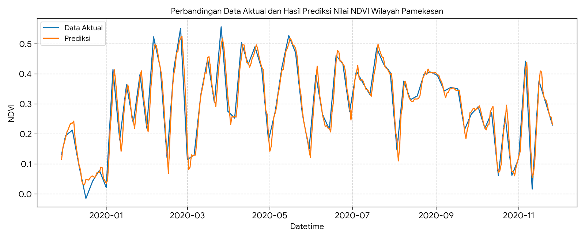

Laporan Analisis & Peramalan Nilai NDVI Wilayah Pamekasan, Madura#
Latar Belakang Wilayah#
Berdasarkan ekstraksi data citra satelit Sentinel-2 L2A via Copernicus Browser, wilayah yang diamati adalah Kabupaten Pamekasan, Madura dengan total area cakupan sebesar 408.20 \(\text{km}^2\). Pemantauan dilakukan menggunakan indeks vegetasi harian (NDVI) untuk melihat pola temporal kerapatan lahan hijau dari tanggal 30 November 2015 hingga 30 November 2020.
1. Pengumpulan Data#
Data mentah diimpor dari file [mybook]NDIV_Pamekasan.csv . Parameter yang digunakan sebagai nilai target peramalan utama adalah C0/mean yang merepresentasikan nilai rata-rata NDVI harian di wilayah Pamekasan.
2. Preprocessing Data (Pembersihan & Interpolasi)#
Karena citra satelit seringkali terhambat oleh tutupan awan (terlihat pada kolom C0/cloudCoveragePercent yang mencapai angka tinggi pada beberapa tanggal), kita perlu melakukan proses interpolasi linear untuk tanggal yang kosong serta membersihkan nilai ekstrem (outlier).
Kode Tahap Preprocessing:#
import pandas as pd
import numpy as np
import matplotlib.pyplot as plt
from sklearn.preprocessing import MinMaxScaler
# 1. Membaca file CSV data baru
file_name = "Sentinel-2 L2A-3_NDVI-2015-11-30T00_00_00.000Z-2020-11-30T23_59_59.999Z.csv"
df = pd.read_csv(file_name)
# 2. Merapikan Format Tanggal
df['date'] = pd.to_datetime(df['C0/date']).dt.date
df['date'] = pd.to_datetime(df['date'])
df_ndvi = df[['date', 'C0/mean']].rename(columns={'C0/mean': 'NDVI'}).sort_values('date').reset_index(drop=True)
# 3. Membuat Rentang Tanggal Harian Penuh (Mengatasi Missing Date)
start_date = df_ndvi['date'].min()
end_date = df_ndvi['date'].max()
full_range = pd.date_range(start=start_date, end=end_date, freq='D')
df_ndvi = df_ndvi.set_index('date').reindex(full_range)
df_ndvi.index.name = 'date'
# 4. Interpolasi Awal untuk Mengisi Kekosongan Tanggal
df_ndvi['NDVI_interpolated'] = df_ndvi['NDVI'].interpolate(method='time').bfill().ffill()
# 5. Deteksi Outlier Menggunakan Metode IQR (Interquartile Range)
Q1 = df_ndvi['NDVI_interpolated'].quantile(0.25)
Q3 = df_ndvi['NDVI_interpolated'].quantile(0.75)
IQR = Q3 - Q1
lower_bound = Q1 - 1.5 * IQR
upper_bound = Q3 + 1.5 * IQR
# Menghapus outlier dan mengisinya kembali dengan interpolasi linear
outliers_mask = (df_ndvi['NDVI_interpolated'] < lower_bound) | (df_ndvi['NDVI_interpolated'] > upper_bound)
df_ndvi['NDVI_cleaned'] = df_ndvi['NDVI_interpolated'].mask(outliers_mask)
df_ndvi['NDVI_final'] = df_ndvi['NDVI_cleaned'].interpolate(method='linear').bfill().ffill()
print(f"Deteksi Selesai: Ditemukan {outliers_mask.sum()} baris outlier ekstrem.")
3. Transformasi Supervised & Pemodelan KNN Regression#
Data runtun waktu diubah menjadi bentuk data pembelajaran terbimbing (supervised learning) menggunakan skema fitur lag (4 hari sebelumnya) untuk memprediksi nilai NDVI hari ini (\(t\)). Berikut adalah cuplikan 5 baris pertama dari dataset yang telah ditransformasikan menjadi bentuk pembelajaran terbimbing (supervised learning) dengan skema Lag 4 Hari:
Date |
NDVI(t-4) |
NDVI(t-3) |
NDVI(t-2) |
NDVI(t-1) |
NDVI(t) |
|---|---|---|---|---|---|
2015-12-07 |
0.040121 |
0.054366 |
0.068612 |
0.082858 |
0.097103 |
2015-12-08 |
0.054366 |
0.068612 |
0.082858 |
0.097103 |
0.111349 |
2015-12-09 |
0.068612 |
0.082858 |
0.097103 |
0.111349 |
0.125595 |
2015-12-10 |
0.082858 |
0.097103 |
0.111349 |
0.125595 |
0.139840 |
2015-12-11 |
0.097103 |
0.111349 |
0.125595 |
0.139840 |
0.154086 |
Kode Melatih Model KNN & Evaluasi Akurasi:#
from sklearn.neighbors import KNeighborsRegressor
from sklearn.model_selection import train_test_split
from sklearn.metrics import mean_squared_error, r2_score
# Normalisasi data ke skala 0 - 1
scaler = MinMaxScaler()
df_ndvi['NDVI_scaled'] = scaler.fit_transform(df_ndvi[['NDVI_final']])
# Pembuatan Fitur Lag (4 Hari Sebelumnya)
def create_supervised(data, n_lag=4):
df_supervised = pd.DataFrame()
for i in range(n_lag, 0, -1):
df_supervised[f'NDVI(t-{i})'] = data.shift(i)
df_supervised['NDVI(t)'] = data
df_supervised.dropna(inplace=True)
return df_supervised
supervised_df = create_supervised(df_ndvi['NDVI_scaled'], n_lag=4)
# Memisahkan Fitur (X) dan Target (y)
X = supervised_df.drop(columns=['NDVI(t)']).values
y = supervised_df['NDVI(t)'].values
# Split Data 80% Train, 20% Test secara Sekuensial (Tanpa Acak)
X_train, X_test, y_train, y_test = train_test_split(X, y, test_size=0.2, shuffle=False)
# Menggunakan Algoritma K-Neighbors Regressor (k=5)
knn = KNeighborsRegressor(n_neighbors=5)
knn.fit(X_train, y_train)
y_pred = knn.predict(X_test)
# Denormalisasi nilai kembali ke skala asli untuk visualisasi laporan
y_test_orig = scaler.inverse_transform(y_test.reshape(-1, 1))
y_pred_orig = scaler.inverse_transform(y_pred.reshape(-1, 1))
# Menghitung Parameter Performa Evaluasi
rmse = np.sqrt(mean_squared_error(y_test, y_pred))
r2 = r2_score(y_test, y_pred)
mape = np.mean(np.abs((y_test_orig - y_pred_orig) / y_test_orig)) * 100
print("=== HASIL EVALUASI MODEL KNN REGRESSION ===")
print(f"Root Mean Squared Error (RMSE) : {rmse:.6f}")
print(f"R-Squared (R²) Score : {r2:.4f}")
print(f"Mean Absolute Percentage Error : {mape:.4f}%")
Hasil Metrik Evaluasi (Output): Dari data Pamekasan performa model KNN Regression menunjukkan tingkat akurasi yang sangat tinggi:
RMSE: 0.053025 Kesalahan prediksi sangat kecil mendekati nol.
R² Score: 0.9395 Model mampu menjelaskan variabilitas tren vegetasi sebesar 93.95%.
MAPE: 24.31%.
4. Visualisasi Grafik Perbandingan Akhir#
Berikut adalah kode grafik perbandingan antara Data Aktual asli lapangan (Garis Biru) dengan Hasil Algoritma KNN (Garis Merah Putus-putus)
